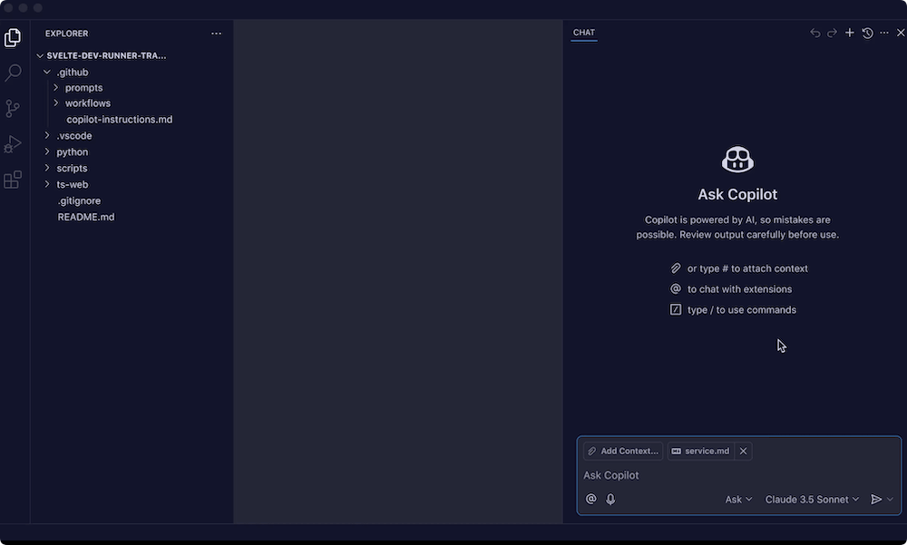

GitHub Copilot入門チュートリアル
GitHub Copilotはもはや2021年のあのコード補完ツールではない。
GitHub Copilotは現在、IDE、CLI、GitHubをカバーするAIプログラミングプラットフォームです。IDEで複数のファイルを自律編集し、クラウドでIssueをPRに変換し、ターミナルで並列サブエージェントを実行し、PRページでインテリジェントなコードレビューを行います。

GitHub Copilotの発展
| 年 | マイルストーン |
|---|---|
| 2021 | 技術プレビュー開始。OpenAI Codexを搭載し、行レベルのコード補完のみ実行 |
| 2022 | 正式に商用化、初の大規模AIプログラミングアシスタント |
| 2023 | Copilot Chatが登場し、対話型インタラクションを実現。Copilot for Businessもリリース |
| 2024 | Agent Modeで複数ファイルの自律編集が可能に。マルチモデルサポート開始。無料プランも登場 |
| 2025 | Agent Modeが全面GA。Cloud AgentがIssueを直接PRに変換。Copilot Code Reviewが正式リリース |
| 2026 | Cloud Agent、CLI、JetBrains Agent Modeが全面GA。AI Creditsの従量課金制に移行。470万以上の有料ユーザーを擁し、フォーチュン100企業の90%以上をカバー |
今日のCopilotは、IDE、CLI、GitHub.com、モバイルにまたがる統一AIプログラミングプラットフォームであり、単なる補完プラグインではありません。
コア機能の全体図
| 機能 | 入口 | 一言で説明 |
|---|---|---|
| コード補完 | IDE | 入力中にリアルタイムで単行/複数行の提案を表示 |
| Next Edit | IDE | 次の変更箇所を予測して内容を提案 |
| Copilot Chat | IDE / GitHub.com / Mobile | 対話型Q&A、コードの説明、テスト生成 |
| Agent Mode | IDE | 複数ファイルの自律編集、ターミナルコマンドの実行、タスク完了まで反復 |
| Cloud Agent | GitHub.com | IssueをCopilotに割り当てると、クラウド上でコードを書き、PRを作成 |
| Copilot CLI | ターミナル | ターミナル内のエージェント。Plan、自動運転、並列サブエージェントをサポート |
| Code Review | GitHub.com / IDE | AIがPRをレビューし、インライン提案を行い、ワンクリックで修正可能 |
| PR要約 | GitHub.com | PRの説明と変更概要を自動生成 |
| Commitメッセージ | IDE / GitHub Desktop | Commit Messageを自動生成 |
| GitHub Spark | GitHub.com | 自然言語でアプリを記述すると、実行可能なコードとリアルタイムプレビューを生成 |
VS Codeの使用
VS Codeは豊富なAIプラグインにより、Vibe Codingを実践する上で最も主流なエディタとなっています。Copilotを利用した軽量開発も可能ですし、専用のVIBEエージェントプラグインをインストールして全自動の複数ファイル開発も実現できます。
VS Codeチュートリアル：https://www.runoob.com/vscode/vscode-tutorial.html
新版VS Code（1.116+ 最新安定版）はCopilotをネイティブに内蔵しており、プラグインを手動でインストールする必要はありません。左上隅のアイコンをクリックすると表示されます：

エディタを開くとCopilotの入口が表示され、GitHubアカウントにログインするだけで利用できます。拡張機能マーケットでプラグインをインストールする必要はありません。


ログイン後に表示：

旧版VS Code（1.115以前のバージョン）では、2つの拡張機能を手動でインストールする必要があります：
- GitHub Copilot：インラインコードの自動補完
- GitHub Copilot Chat：対話型AIコーディングアシスタント
Vibe Codingを始める
次に、ディレクトリフォルダを作成します：
mkdir runoob-vibe-coding
ディレクトリに移動：
cd runoob-vibe-coding
VS Codeで開く：
code .
エディタにファイルを追加しますvibe-coding-runoob.html ：

左側のファイルメニューで作成したファイルを選択し、右上隅のパネル切り替えボタンをクリックしてAIツールを表示し、ダイアログボックスにプロンプトを入力します：
帮我写一个 JavaScript 小游戏：程序随机生成 1 到 100 的数字，让我猜，猜大了提示「太大了」，猜小了提示「太小了」，猜中了就结束。
AIが作業を開始します。最終結果を見てみましょう：

プロセス全体でコーディングに参加する必要はありません。HTMLコード、CSSスタイルコード、JavaScriptコードがすべて自動生成されます。
公式リソース
- GitHub Copilot機能の概要：docs.github.com/copilot/get-started/features
- プランと料金：github.com/features/copilot/plans
- Cloud Agentドキュメント：docs.github.com/copilot/concepts/agents
- カスタム指示ガイド：docs.github.com/copilot/customizing-copilot
- 学生無料申請：education.github.com/pack
- Copilot Changelog：github.blog/changelog